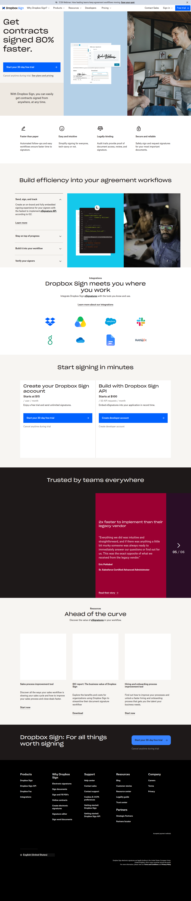
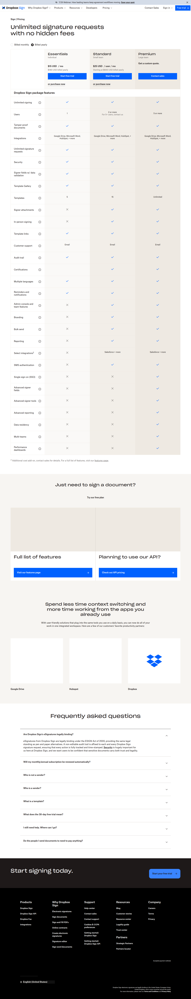
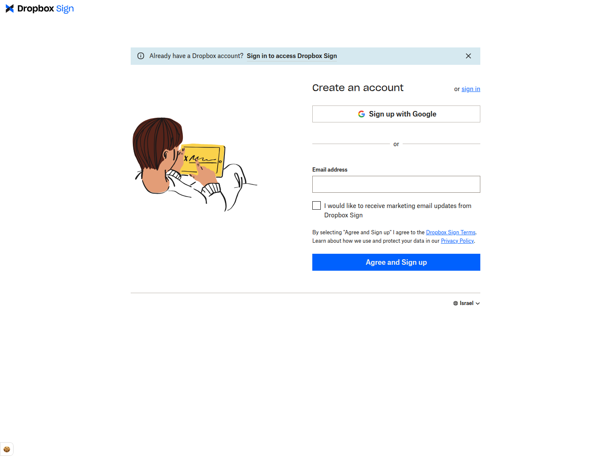
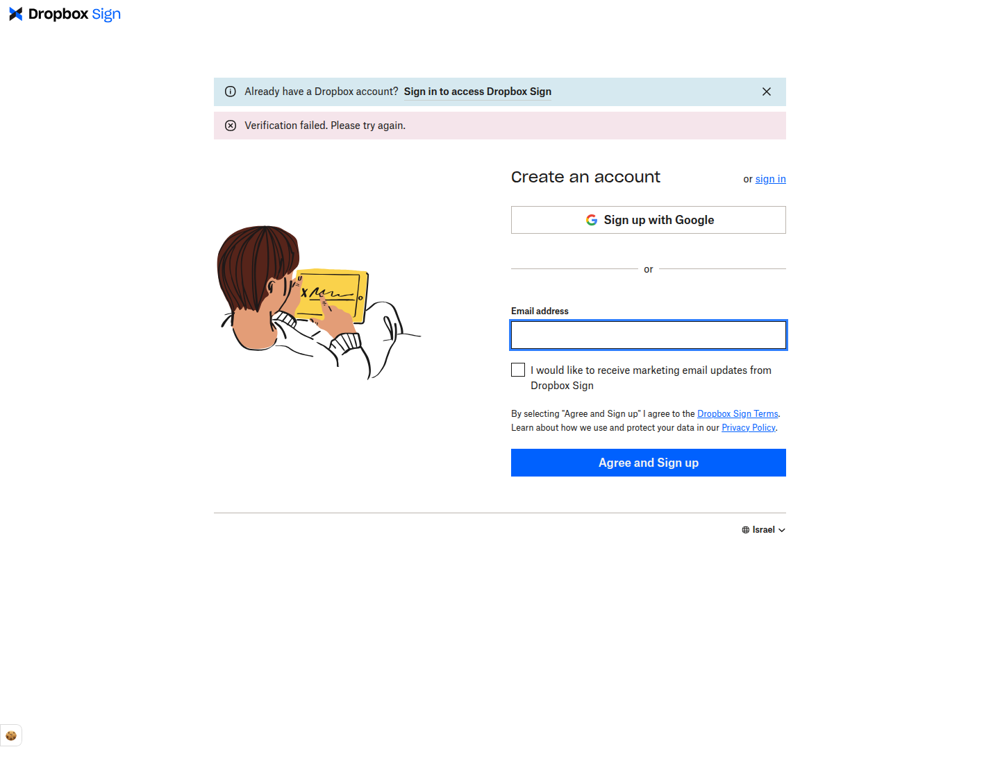

Profile
- Company
- Dropbox Sign
- Url
- https://dropboxsign.com/
- Source Category
- NDA & deal-room tools
- Research Status
- Deep Cited Research / Draft Complete
- Current Status
- live - verified via direct fetch (HTTP 200, 2026); active, actively marketed Dropbox product line with current webinar promotions ('7/29 Webinar') visible on homepage
- Founded Launch Year
- 2011 (originally founded as HelloFax, pivoted/rebranded to HelloSign)
- Company Age
- ~15 years (as of 2026); ~7 years as a Dropbox-owned product (acquired Feb 2019), rebranded 'Dropbox Sign' in 2022
- Hq Country
- United States (San Francisco, CA)
- Operating Area
- Global - legally binding in the United States, European Union, United Kingdom, and 'many countries around the world' per homepage legal disclaimer
- Target Users
- Sales/business development teams, HR, startups, fintech, real estate, on-demand services - broad SMB-to-enterprise e-signature market, not founder/investor-specific
- Product Category
- E-signature / online contract signing; document management; API for embedding e-signatures - NOT a data room or NDA-gating-focused product like the others in this batch (no dedicated data room product)
Product Flows
- Swipe Card Interface
- no - not found
- Mutual Match
- no - not applicable
- Ai Matching Scoring
- no - not found
- Ai Deck Scoring
- no - not found; not applicable to an e-signature product
- Founder To Founder Flow
- Not a matching product; Dropbox Sign's relevant equivalent is purely transactional: user (e.g., a founder) uploads a contract/agreement -> adds signer(s) by email, defines signing order and fields -> signer receives a link, reviews and signs via legally-binding e-signature -> both parties get an audit trail proving access, review, and signature. There is no document-sharing/access-gating layer beyond the specific contract being signed (no broader 'data room' concept).
- Founder To Investor Flow
- Same signing-only mechanism as above; positioned generically for 'Startups' as a use case (listed among Sales, HR, Fintech, Real Estate, On-demand services), e.g., signing SAFEs, term sheets, or NDAs as discrete documents - but with no built-in document-viewing analytics, watermarking, or data-room/NDA-GATE-before-view mechanism the way Digify/DocSend/Carta have. It complements, rather than replaces, an NDA-gated data room.
- Project Profiles
- not found / no public source - not applicable
- Messaging Collaboration
- no - not found; no messaging/chat feature; workflow is limited to prepare/send/sign/track a document
- Mobile App
- yes
- Web App
- yes
Security & Documents
- Nda Gated Unlock
- no - not found as a distinct feature; Dropbox Sign can be used to SIGN an NDA as a standalone document, but has no data-room-style 'must accept NDA before viewing other documents' gating mechanism
- Data Room
- no - not found; Dropbox Sign is explicitly an e-signature/document-signing product, not a data room product (distinct from sibling product DocSend, which IS a data room, both under the Dropbox umbrella)
- E Signature
- yes
- Meeting Prep Ai Briefing
- no - not found
Pricing, Funding & Traction
- Pricing Model
- Tiered subscription starting at $15/user/month (30-day free trial, cancel anytime); separate API pricing starting at $100 per 50 API requests/month for developers embedding e-signatures
- Business Model
- B2B/B2C SaaS subscription plus usage-based API pricing; part of Dropbox's broader business-plan bundling
- Total Funding
- Raised prior to acquisition as independent company 'HelloSign' (specific pre-acquisition funding total not independently re-verified in this pass; multiple sources indicate modest VC rounds); acquired by Dropbox for $230 million in cash in February 2019 - Dropbox's largest acquisition at the time (per CNBC, VentureBeat)
- Funding Rounds
- VC-backed as HelloSign/HelloFax prior to 2019; acquisition by Dropbox was the terminal capital event
- Investors
- Pre-acquisition VC investors not independently re-verified in this pass; now wholly owned by publicly traded Dropbox, Inc. (NASDAQ: DBX)
- Funding Source Type
- VC-backed startup -> acquired -> now a product line of a public company
- Last Funding Date
- Acquisition by Dropbox closed February 2019 (announced Jan 28, 2019)
- Users Traction
- No specific current user-count figure found on homepage in this pass (prior claims of '80% faster' contract signing and testimonials from named companies, but no aggregate customer count like DocSend's '47,000 companies' or Digify's '800,000 professionals')
- Deals Funding Facilitated
- not found / no public source - not applicable to this product type (pure e-signature tool, not a fundraising-tracking platform)
- Partnerships
- Salesforce integration (cited to boost sales team performance by up to 45% per homepage); broad integrations ecosystem ('We meet you where you work')
- Media Coverage
- Strong coverage of the original 2019 Dropbox acquisition (CNBC, VentureBeat, TechStartups, Diginomica, Dropbox's own press release); ongoing coverage as a mainstream e-signature competitor to DocuSign/Adobe Sign
- Product Update Activity
- Active - homepage promotes a live upcoming webinar ('7/29 Webinar: How leading teams keep agreement workflows moving'), indicating current marketing/product activity
- Acquisition Rebrand History
- Founded 2011 as HelloFax, became HelloSign; acquired by Dropbox for $230 million, announced January 28, 2019, closed February 2019; rebranded from 'HelloSign' to 'Dropbox Sign' in 2022
Scores
- Product Overlap Score
- 1
- Feature Maturity Score
- 4
- Market Traction Score
- 3
- Funding Strength Score
- 5
- Ai Depth Score
- 1
- Nda Security Strength Score
- 2
- Network Moat Score
- 2
- Direct Threat Score
- 2.4
- Source Confidence
- High
Evidence Notes
- Primary Sources
- https://dropboxsign.com/
https://www.dropbox.com/sign
https://sign.dropbox.com/features/api - Secondary Sources
- https://www.cnbc.com/2019/01/28/dropbox-buys-electronic-signature-start-up-hellosign-for-230-million.html
https://venturebeat.com/business/dropbox-acquires-hellosign-for-230-million
https://dropbox.gcs-web.com/news-releases/news-release-details/dropbox-acquire-hellosign
https://www.softwaresuggest.com/hellosign/mobile-app - Unsupported Claims
- Pre-acquisition HelloSign/HelloFax funding-round-by-round history was not independently re-verified line by line in this pass (only the total acquisition price was confirmed); if precise Series A/B figures are needed, further Crunchbase drill-down is recommended.
- Contradictions
- Prior pass total_funding field of '$15; $100' was actually the pricing tiers ($15/user/month subscription; $100/50 API requests/month) misread as funding figures - corrected here.
- Last Checked
- 2026-07-19
- Notes
- Dropbox Sign is the weakest direct competitive analog to BizMatch in this batch (product_overlap_score 1) - it is a pure e-signature tool with NO data room, NO NDA-gating mechanism, and NO document-tracking/analytics layer. It is most useful to BizMatch only as a reference for the 'e-signature' leaf feature within a broader NDA-gated flow, not as a data-room/discovery competitor. Notably, Dropbox owns BOTH Dropbox Sign (e-sign only) and DocSend (data room + NDA gating) as separate product lines - together they cover the full NDA-to-signature flow, but each individually covers only part of it.
Registration Flow
Research date: 2026-07-19. Screenshots are sanitized public copies from the private registration-flow capture set; credentials, tokens, verification links/codes, browser chrome, and private identifiers are not intentionally published.
Outcome: stopped at CAPTCHA / Cloudflare / anti-bot verification.
Stop point: Official free-account creation form immediately after one direct-email signup submission returned 'Verification failed. Please try again,' before password setup, account creation, email verification, onboarding, plan activation, payment, or any Google OAuth permission screen
Blocker / boundary: Dropbox Sign rejected the direct-email signup submission with 'Verification failed. Please try again.' This is an anti-abuse/verification stop point; it was not retried or bypassed in accordance with the task's CAPTCHA and anti-bot boundary.
- Official Dropbox Sign homepage. The official public homepage presents Dropbox Sign eSignatures and a prominent 'Start your 30-day free trial' action. It also identifies the trial as cancellable during the trial period and links to plans and pricing.
- Pricing page and free-plan route. The official pricing page presents paid Essentials and Standard free-trial routes, a Premium contact-sales route, and a distinct 'Try our free plan' link for users who only need to sign a document. The paid-trial and purchase actions were not opened; the explicit free-plan route was followed.
- Free-account registration form. The free-plan route resolves to Dropbox Sign's official app.hellosign.com account-creation form. It offers Google signup or direct email signup, leaves marketing email opt-in unchecked, and requires agreement to the Dropbox Sign Terms and Privacy Policy. The empty form was captured before any private data was entered.
- Verification failure and stop point. The authorized registration email was entered privately and 'Agree and Sign up' was submitted once. The page remained on the account-creation form and displayed the generic anti-abuse result 'Verification failed. Please try again.' The email field was cleared before evidence capture, and the flow was stopped without retrying or attempting to bypass verification.



